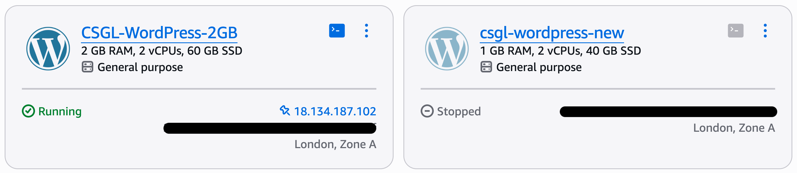

Published 30 May 2026
When a 1GB Instance Wasn't Enough
After investigating a real production outage on AWS Lightsail, I realised the problem was not just a single bad setting or a temporary spike. The site was running too close to the limits of a 1GB instance, with very little operational headroom.
{kind=link}

Comparing the original 1 GB Lightsail instance with the upgraded 2 GB production instance after investigating the outage.
The outage changed the question
The original investigation focused on why the production WordPress site had gone down. Monitoring had detected the outage, logs showed an out-of-memory event, and MariaDB had been killed by the Linux OOM killer.
The immediate cause was clear enough: the server had run out of memory.
But the more useful question was not just why the outage happened. It was whether the instance had enough capacity to run the site comfortably in normal production use.
Fixing the obvious problems
The first step was to correct the issues discovered during the outage investigation.
- PHP memory limits were restored to sensible production values
- Temporary migration settings were removed
- A stale ManageWP plugin reference was cleaned up
- Monitoring and alerting were already in place through Route 53, CloudWatch and SNS
These fixes reduced the risk of the same outage happening again for the same reasons.
But they did not change the underlying capacity of the server.
The old 1GB instance had been stable
One detail made the investigation more interesting: the previous Bitnami-based Lightsail instance had run reliably on the same 1GB plan.
That suggested the issue was not simply that the website had always required more capacity. Something had changed after the migration to the official AWS Lightsail WordPress blueprint.
It is possible that the official blueprint has a different baseline memory profile, or that the migrated production configuration placed more pressure on the instance than the old environment did.
Either way, the practical conclusion was the same: the new production environment no longer had enough operational headroom on the 1GB plan.

Monitoring data showed the 1 GB instance operating well above its sustainable CPU capacity before the outage investigation prompted an upgrade.
Swap helped, but it was not capacity
A persistent 1GB swap file had already been added to help the instance survive temporary memory pressure.
That was useful, but swap is not the same thing as having enough RAM. It can provide a safety buffer, but it does not remove the underlying constraint of running WordPress, Apache, MariaDB and background tasks on a very small instance.
The outage made that distinction much clearer.
The real lesson was headroom
The site did not need a complex scaling architecture. It did not need containers, load balancers or a major redesign.
It needed enough headroom for normal operational variation: WordPress activity, Apache traffic, database work, plugin behaviour and background maintenance.
A 1GB instance can be enough for some small workloads, but this incident showed that it was too close to the edge for this production environment.
What changed
Previously, I had been focused on keeping costs as low as possible while still running the site successfully.
After this incident, the priority shifted towards operational stability. A slightly larger instance costs more, but it also provides more breathing room and reduces the chance that routine workload spikes become outages.
Conclusion
This incident showed me that production reliability is not only about fixing individual problems. It is also about making sure the system has enough capacity to absorb normal variation without failing.
Monitoring helped identify the outage, logs revealed the immediate cause, and the follow-up investigation showed the broader issue: the 1GB instance had very little margin for error.
The lesson was simple but important. For a production site, the cheapest instance is not always the best fit if it leaves the system operating too close to its limits.
Related project
This work was implemented as part of the WordPress on AWS Lightsail project.